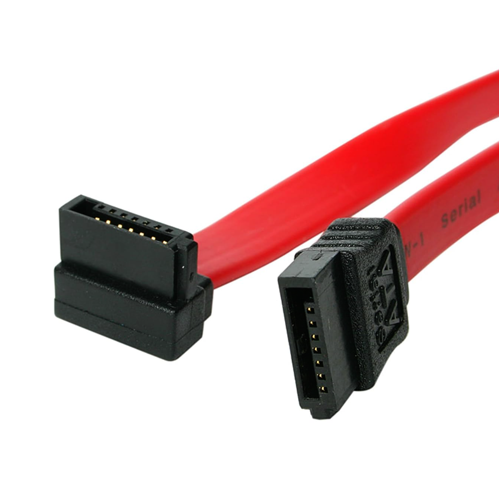

| Connector Type |
Description |
Common Uses |
Image Space |
| Fiber Optic (SC) |
Subscriber Connector (SC) - Uses a push-pull mechanism, commonly used in data centers and networks for high-speed data transmission. |
High-speed data transmission in network and internet communications. |
Click to Enlarge |
| Fiber Optic (LC) |
Lucent Connector (LC) - A smaller version of the SC, used for high-density connections in data centers and enterprise applications. |
High-density, high-speed connections in data centers and enterprise networks. |
Click to Enlarge |
| F-Type |
Used for coaxial cable connections, primarily in cable television and internet service connections. |
Cable TV, broadband internet, and other coaxial cable applications. |
Click to Enlarge |
| RJ-11 |
A small connector used for telephone connections and older modem connections, supports up to 4 wires. |
Telephone line connections, older modems, and DSL connections. |

Click to Enlarge |
| RJ-45 |
A larger connector used for Ethernet networking (Cat5e, Cat6), supports 8 wires and is commonly used in LAN setups. |
Ethernet networking for local area networks (LANs), widely used in homes and businesses. |

Click to Enlarge |
| BNC |
Bayonet-Neill-Concelman (BNC) connector - Used with coaxial cables for radio, television, and other RF signals. |
Used in radio, video, and RF signal transmission applications. |
Click to Enlarge |
| USB 2.0 Type-A |
Standard rectangular USB connector found on many computers and devices, used for various peripherals (keyboards, mice, etc.). Max speed 480 Mbps. |
Connecting a variety of peripherals like keyboards, mice, and external drives. |
Click to Enlarge |
| USB Type-C |
Reversible connector used in modern smartphones, laptops, and other peripherals, capable of high-speed data transfer and charging. |
Modern devices, including smartphones, laptops, and peripherals, for data transfer and power delivery. |
Click to Enlarge |
| USB 3.0 |
High-speed USB standard (with blue color coding), significantly faster than USB 2.0.Theoretically 5 Gbps, real world 3 to3 Gbps. |
Used for devices that require faster data transfer, such as external hard drives and SSDs. |
Click to Enlarge |
| USB Micro |
A smaller version of the USB connector, commonly used in older mobile devices. |
Used for charging and data transfer in smartphones and other portable devices. |
Click to Enlarge |
| USB Mini |
An older, smaller USB connector used in digital cameras and some older portable devices. |
Used for connecting small electronics like cameras and early smartphones. |
Click to Enlarge |
| DVI (DVI-D, DVI-I, DVI-A) |
Digital Visual Interface - Used for connecting displays to computers, available in digital, analog, and integrated versions. |
Video display connections between computers and monitors or projectors. |
Click to Enlarge |
| VGA |
Video Graphics Array - An analog standard used for connecting older monitors and projectors. |
Video output to monitors and projectors, mainly older systems. |
Click to Enlarge |
| S-Video |
Separate Video - An older video standard using separate signals for brightness and color. |
Video output to older TVs, monitors, and video equipment. |
Click to Enlarge |
| Molex |
4-pin power connector used to power older internal components, such as optical drives and hard drives. |
Power connection for internal devices like hard drives, optical drives, and fans. |
Click to Enlarge
Click to Enlarge
|
| SATA |
Serial Advanced Technology Attachment - Used for connecting storage devices like hard drives and SSDs to the motherboard. |
Connecting internal storage devices such as SSDs and HDDs. |

Click to Enlarge |
| CPU Power Connector (4-pin, 8-pin) |
Connector that provides power directly to the CPU on the motherboard. |
Powers the processor on the motherboard. |
Click to Enlarge |
| eSATA |
External Serial Advanced Technology Attachment - Used for connecting external storage devices to the computer. |
External connection for hard drives and SSDs, similar to SATA but used externally. |
Click to Enlarge |